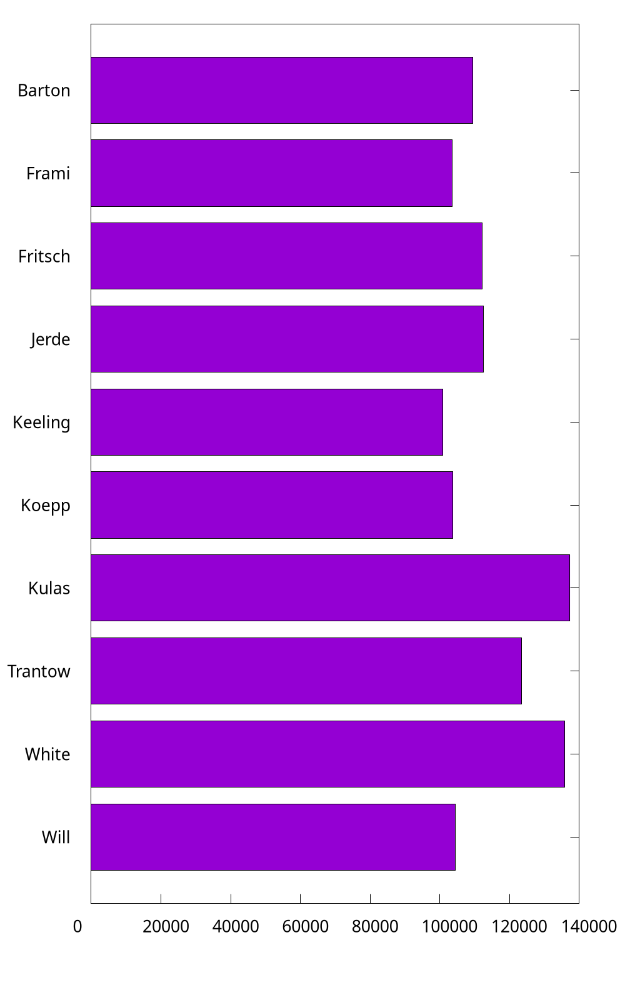

Item 1-30
1. How to resize the figure
Command set size ratio can set the radio of height/width. However, this won't affect the size of figure itself, and it will only change the ratio the plotting area. To remove the extra space, we can use size <width>, <height> when set terminal.
Note that the
sizehas different meanings for differentterminal. See more at Save plot.
For example, the following code is used to plot the time series data like Plotting dates and strings:
set terminal pngcairo transparent size 1000,540 enhanced font 'Verdana,16'
set output 'date.png'
unset key
set xdata time
set timefmt "%Y-%m-%d %H:%M:00"
set xtics format "%m-%d"
plot "date.dat" u 1:3 w lines lw 1.5
2. How to write complex mathematical expressions
We can set Latex as the output in gnuplot, and thus this feature makes it very convenient to write complex mathematical expressions.
set term epslatex standalone color
set samples 1000
set output 'example.tex'
plot sin(x) title '$\sigma \frac{3}{4}$'
The code can be found at math.gp. Here, we set the term (short for terminal) as epslatex, and the remaining options:
standalone: The output is a standalone .tex file. Otherwise, we can only include the output in another Latex file.color: As the name implies, the output will always be colorful. Otherwise, some lines may be in monochrome mode.
The third line is to specify the output file. In fact, another .eps file will also be generated (you do not have to specify its name), where .tex manages the mathematical expression, and .eps accounts for the plotting itself. We can run this script by gnuplot math.gp in the shell:
$ gunplot math.gp
$ ls
$ example-inc.eps example.tex math.gp
After that, we can compile it to PDF via Latex.
I also wrote a helper script (tex2eps.sh) to generate a standalone .eps figure from .tex. Suppose there are example-inc.eps and example.tex in the current folder.
$ ./tex2eps.sh example.tex
Then it would generate a standalone .eps file containing both plot itself and mathematical expressions.
3. How to reuse gnuplot's styles
This article is adapted from How to make gnuplot charts look more visually appealing?. As we have already seen, the default style of gnuplot is not appealing enough, and we often need custom configs, such as lw (linewidth). Readers can refer to gnuplot-palettes for more useful resources.
Some people may would like to a standalone script. They may collect some fancy styles, and copy these styles into their current working script.
# define axis
# remove border on top and right and set color to gray
set style line 11 lc rgb '#808080' lt 1
set border 3 back ls 11
set tics nomirror
# define grid
set style line 12 lc rgb '#808080' lt 0 lw 1
set grid back ls 12
# color definitions
set style line 1 lc rgb '#8b1a0e' pt 1 ps 1 lt 1 lw 2 # --- red
set style line 2 lc rgb '#5e9c36' pt 6 ps 1 lt 1 lw 2 # --- green
The complete script can be found at fancy.gp.
You can also store these styles in an external file. Here we prepare another style file which configs the line, border, ticks, border and grid, and then we can load it in our script:
load "style"
set terminal qt font "Alegreya, 14" size 800, 580
set xlabel "x"
set ylabel "f(x)"
set grid
set key right top
set xrange[0:6.28]
set yrange[-1:1]
plot sin(x) w l ls 1, cos(x) w l ls 2
The same technology is also used in Loading palette.
By the way, one can also rename style to .gnuplot and put it in her home directory (it works on Linux and macOS). Then gnuplot would automatically load this file.
4. How to plot stacked bar charts
We reuse the example in Revisit bar chart, and try to plot it as a stacked bar.
set style data histogram
set style histogram rowstacked
set boxwidth 0.8 relative

In the code (stacked.gp), we use set style histogram rowstacked to set the histogram rowstacked, and the default style corresponds to set style histogram clustered gap 2.
Note that to make some space between boxes, we use the syntax set boxwidth {<width>} {absolute|relative}. By default, adjacent boxes are extended in width until they touch each other. Relative widths are interpreted as being a fraction of this default width, and this option is widely used.
5. How to plot horizontal bar charts
As we mentioned in Horizontal bar, we can use boxxyerror to plot a horizontal bar. Here we use another trick: by rotating (hbar.gp).
set bmargin 4
set tmargin 2
set style fill solid border -1
set boxwidth 0.8
set y2range [0:*]
set y2tics
set xtics offset 0,-0.5 right
set xtics rotate by 90
set y2tics rotate by 90
set y2tics offset 0,-1
And we also have to rotate the output by hand.
It is a bit complicated. So I still recommend the method introduced in Horizontal bar.
6. How to customize borders?
Sometimes, we may like to keep the X1 (bottom) and Y1 (left) only. We add the code in the following into stacked.gp:
set border 3
As shown in How to reuse gnuplot styles, it is also possible to set borders' other properties, such as linetype, linecolor, and linewidth. In 2D plots the border is normally drawn on top of all plots elements (front). If you want the border to be drawn behind the plot elements, use set border back. Then, what does 3 mean here? The borders are encoded in a 12-bit integer: the four low bits control the border for plot:
- 1: bottom
- 2: left
- 4: top
- 8: right
Therefore, 3 is the sum of 1 and 2, indicting bottom and left, respectively.
7. How to customize keys?
Most of the time, we use unset key to not show the key in previous examples. In this item, we discuss how to customize key. Readers can type help set key for details.
First, as for the position, you can choose {left | right | center} {top | bottom | center} (default is right top). Secondly, as for how they are arranged, you can choose {vertical | horizontal} (default is vertical). Sometimes, we would like to add a box using box option.
set key top left box
set xrange [0:1]
plot x ls 1 t 'x', x**2 ls 2 t 'x^2', x**3 ls 3 t 'x^3'
The previous example looked a bit crowded inside its box. We can add to the width and height of the box by adding some keywords to the command:
set key top left box width 1 height 1
One problem with the key in all the previous examples was that the default length of line used was not long enough to make clear which dash pattern was intended. This can be adjusted by samplen:
set key top left box width 1 height 1 samplen 12
If you prefer the names to come after the curve samples, use the keyword reverse; this goes well with the Left keyword, which justifies the text to the left:
set key top left box width 1 height 1 reverse Left samplen 10
If the number of keys is growing, you can use maxrow keyword to control the maximum amount of rows.
8. How to specify color schemes?
This item, in fact, is a specific topic of How to reuse gnuplot's styles, and here, we focus on color schemes. Readers can refer to Paul Tol's Notes and "Best" series of colors to use for differentiating series in publication-quality for more background knowledge. Color schemes are also discussed in Chapter 3.
This item is adapted from Color maps from colorbrewer.
If you are looking for nice color maps which are especially prepared to work with cartographic like plots you should have a look at colorbrewer2.org. Thanks to Anna Schneider there is an easy way to include them (at least the ones with eight colors each) into gnuplot. Just go to her gnuplot-colorbrewer github site and download the color maps.
This website provides a complete nice color scheme catalogue, and we can reuse them easily. For example, in order to use the colorblind palette by Masataka Okabe and Kei Ito, I prepared a style file okabe_ito.plt (color.gp).
load 'obake_ito.plt'
plot for [ii=1:8] f(x,ii) ls ii lw 2
9. How to plot discrete function?
Since gnuplot is Not a programming language, it lacks many useful features found in Python/R/Matlab. For example, to plot the histogram of flipping a coin until we see a head, the following code is written with Matplotlib:
import numpy as np
import matplotlib.pyplot as plt
p = 1/2
n = np.arange(1,11)
X = np.power(p,n)
plt.bar(n,X)
When it comes to gnuplot, we can resort to for manually to plot a discrete function:
f(x) = 0.5**x
array A[10]
do for [i=1:10] {
A[i] = f(i)
}
plot A using 1:2 with boxes
The complete code can be found at discrete.gp. As for array in gnuplot,
The name of an array can be used in a
plot. This is equivalent to providing a file in which column 1 holds the array index (from 1 to size), column 2 holds the value of real(A[i]) and column 3 holds the value of imag(A[i]).